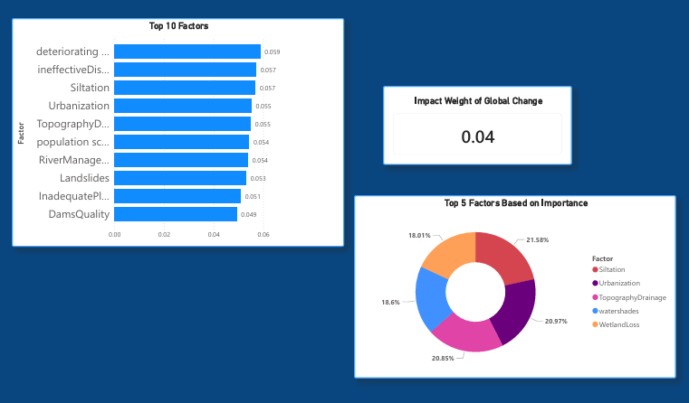

Visualizing flood risk predictions and patterns

This analysis utilizes the Gini Importance from our Random Forest model to identify which environmental and infrastructural factors have the highest correlation with flood probability.